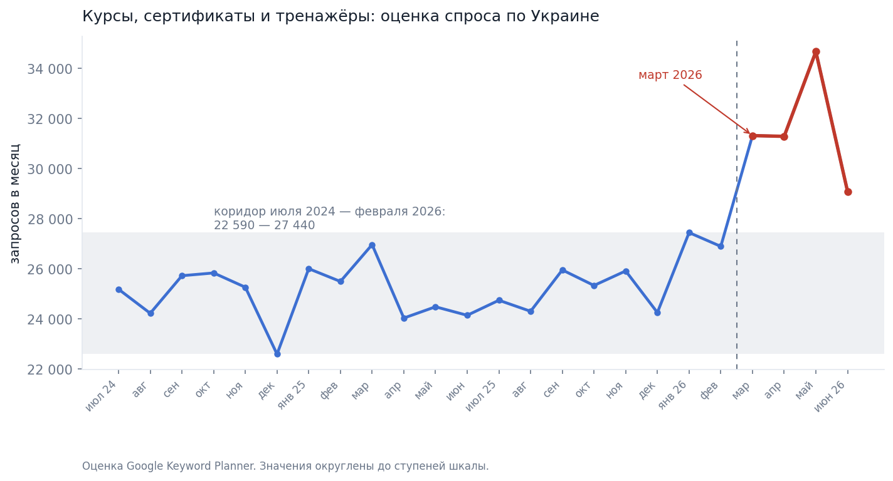
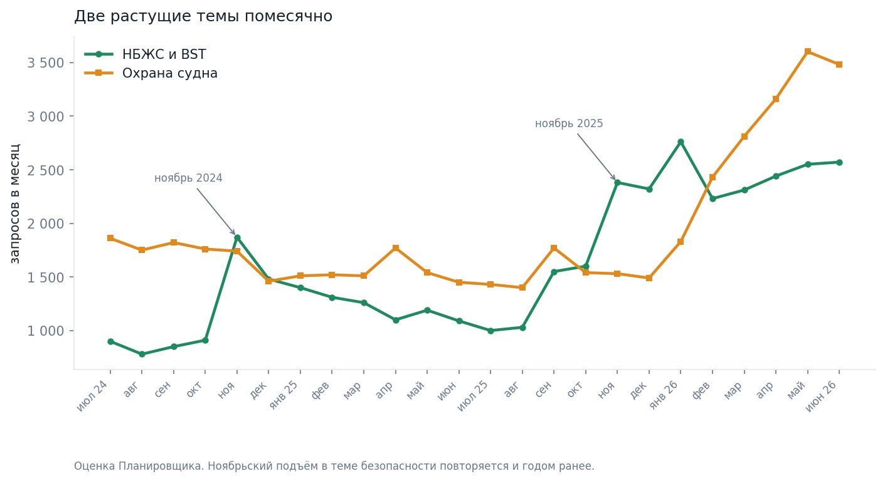
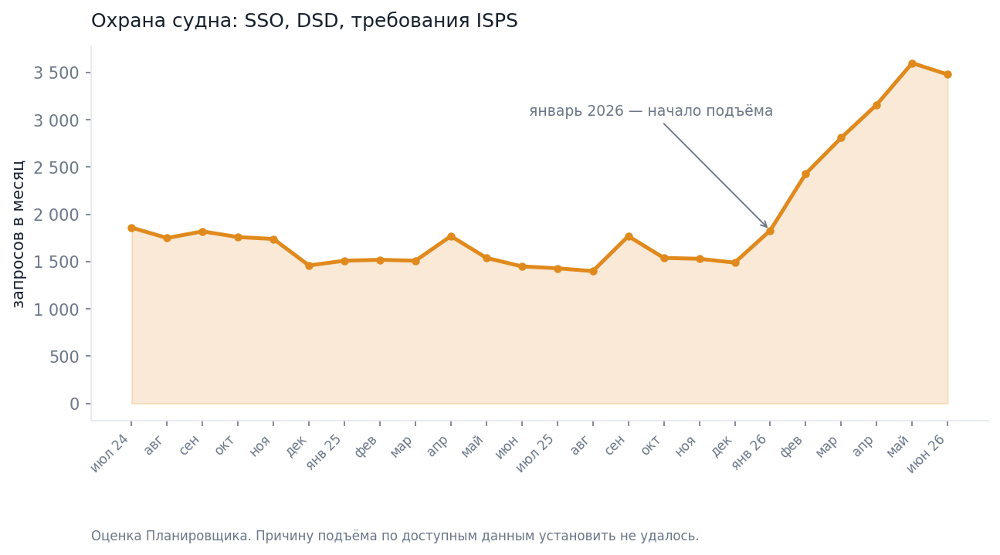
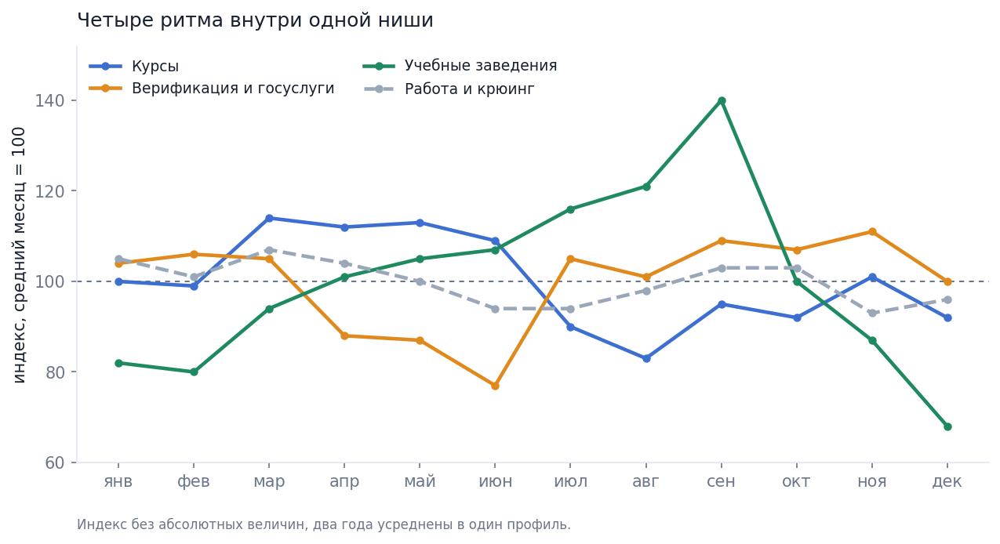
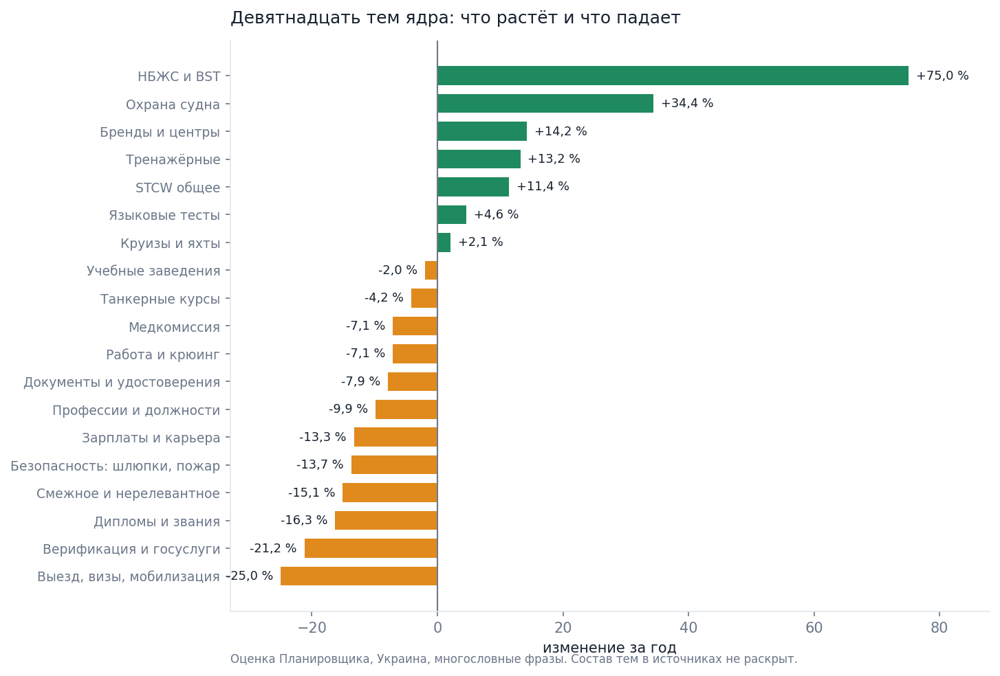
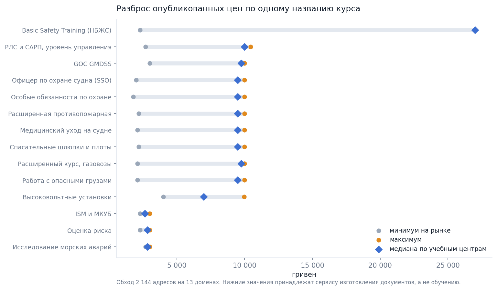
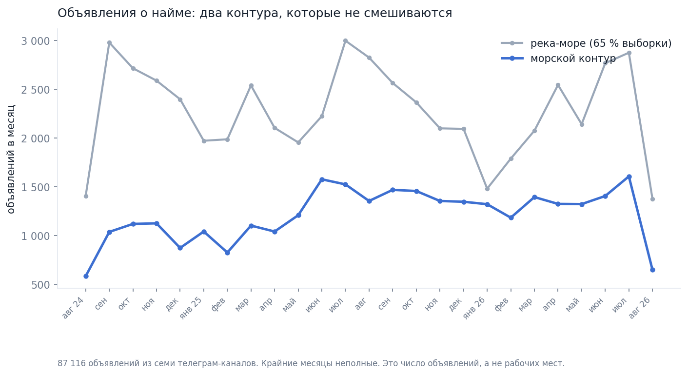
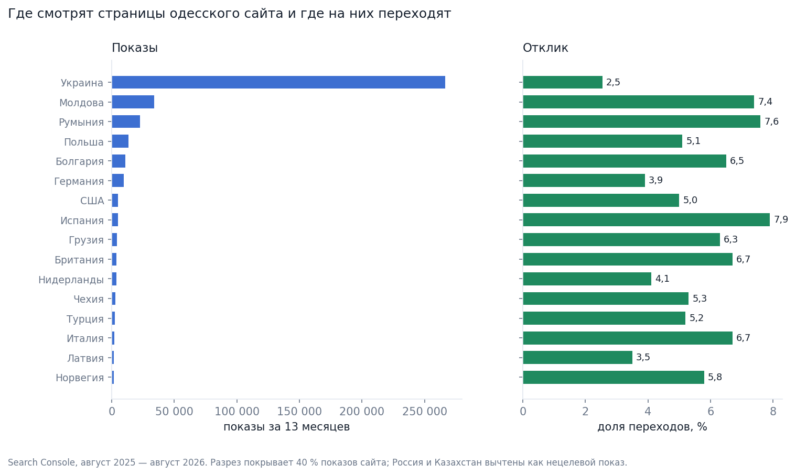

Украинские моряки пошли сверять свои сертификаты
Обзор рынка морской подготовки · август 2026
01Перелом весны 2026 года
То, что продают учебные центры — курсы, сертификаты и тренажёрная подготовка, — полтора года держалось в одном коридоре. Спрос колебался от месяца к месяцу, но за границы коридора не выходил. Самый низкий месяц — декабрь 2024 года, самый высокий — январь 2026-го. Между ними меньше пяти тысяч обращений разницы.
| Месяц | Запросов | Месяц | Запросов | Месяц | Запросов |
|---|---|---|---|---|---|
| июль 2024 | 25 180 | март 2025 | 26 960 | ноябрь 2025 | 25 910 |
| август 2024 | 24 220 | апрель 2025 | 24 030 | декабрь 2025 | 24 250 |
| сентябрь 2024 | 25 720 | май 2025 | 24 480 | январь 2026 | 27 440 |
| октябрь 2024 | 25 830 | июнь 2025 | 24 140 | февраль 2026 | 26 890 |
| ноябрь 2024 | 25 260 | июль 2025 | 24 740 | март 2026 | 31 310 |
| декабрь 2024 | 22 590 | август 2025 | 24 300 | апрель 2026 | 31 280 |
| январь 2025 | 26 000 | сентябрь 2025 | 25 950 | май 2026 | 34 660 |
| февраль 2025 | 25 490 | октябрь 2025 | 25 330 | июнь 2026 | 29 080 |
Ряд построен по оценке Google Keyword Planner. В нём восемь тысяч с лишним размеченных фраз по Украине; отобраны те, что относятся к курсам, сертификатам и тренажёрам. Планировщик показывает не счётчик обращений, а оценку, округлённую до фиксированных ступеней. Поэтому отдельный месяц может гулять в пределах ступени, а повторный сбор даст немного другие числа.

Разница между двумя годами держится не на одном месяце. В первом году, с июля 2024-го по июнь 2025-го, средний месяц дал 24 992 обращения. Во втором — 27 595. До февраля 2026-го прирост к тому же месяцу год назад не превышал семи процентов. С марта пошли шестнадцать, тридцать, сорок два и двадцать.
| Период | Прирост к тому же месяцу годом ранее |
|---|---|
| июль — октябрь 2025 | от −2 % до +1 % |
| ноябрь 2025 — февраль 2026 | от +3 % до +7 % |
| март 2026 | +16 % |
| апрель 2026 | +30 % |
| май 2026 | +42 % |
| июнь 2026 | +20 % |
Июньское значение ниже майского. Судить по нему о развороте рано: данные обрываются июнем 2026 года, следующей точки в этой выборке нет.
Что было в ноябре 2025-го
Общий ряд сдвинулся в марте. В одной отдельной теме сигнал появился на четыре месяца раньше.
Речь о начальной подготовке по безопасности. В Украине её называют НБЖС, в международных документах — Basic Safety Training. Это базовый курс, без которого моряка не допускают к работе на судне. Спрос вокруг него держался около тысячи обращений в месяц. В ноябре 2025 года он поднялся сразу до 2 380.
| Месяц | НБЖС и BST | Охрана судна |
|---|---|---|
| июль 2025 | 1 000 | 1 430 |
| август 2025 | 1 030 | 1 400 |
| сентябрь 2025 | 1 550 | 1 770 |
| октябрь 2025 | 1 600 | 1 540 |
| ноябрь 2025 | 2 380 | 1 530 |
| декабрь 2025 | 2 320 | 1 490 |
| январь 2026 | 2 760 | 1 830 |
| февраль 2026 | 2 230 | 2 430 |
| март 2026 | 2 310 | 2 810 |
| апрель 2026 | 2 440 | 3 160 |
| май 2026 | 2 550 | 3 600 |
| июнь 2026 | 2 570 | 3 480 |
Обратно уровень не опустился. За два года тема прибавила 75,0 %. Величину пересчитали по помесячному ряду, и она сошлась с годовой тематической таблицей до единицы.

Седьмого ноября 2025 года Морская администрация Украины опубликовала разъяснение по резолюции ИМО MSC.560(108). Сама резолюция вступила в силу первого января 2026 года. Скачок в теме НБЖС приходится на тот же месяц, что и разъяснение.
Совпадение по времени точное, но объяснением оно ещё не становится. По данным Ahrefs ноябрьский пик в этой теме повторяется три года подряд: 221 в ноябре 2024-го, 213 в ноябре 2025-го. Ноябрь в теме безопасности высокий сам по себе, независимо от регулятора. Отделить сезонную часть подъёма от реакции на разъяснение по доступным данным не удалось.
| Год | Январь — август, сумма индекса | Ноябрь | Июнь |
|---|---|---|---|
| 2024 | 755 | 221 | 49 |
| 2025 | 931 | 213 | 64 |
| 2026 | 1 125 | нет данных | 92 |
Годовые суммы растут на 23 % и 21 %. Растёт и июньский минимум — с 49 до 92. Это единственная тема в материале с трёхлетней помесячной историей и единственная, где сезонный профиль повторяется из года в год. Индекс Ahrefs — величина относительная, абсолютных объёмов за ним нет. С оценками Планировщика в одной таблице он не складывается.
Что именно спрашивают
Внутри темы изменился не только объём, но и формулировка. Быстрее всего росли запросы о том, как документ выглядит. Падал единственный — о том, сколько он стоит.
| Фраза | Год до июня 2025 | Год до июня 2026 | Изменение |
|---|---|---|---|
| ship safety officer сертификат | 150 | 3 110 | в двадцать раз |
| designated security duties сертификат | 310 | 3 850 | в двенадцать раз |
| сертификат нбжс фото | 180 | 1 750 | в десять раз |
| security awareness сертификат | 100 | 750 | в семь раз |
| сертификат охрана судна | 120 | 870 | в семь раз |
| как выглядит сертификат нбжс | 130 | 620 | в пять раз |
| нбжс сертификат | 720 | 2 320 | в три раза |
| сертификат бжс | 190 | 460 | в два раза |
| нбжс сертификат цена | 1 170 | 840 | −28 % |
| ship security officer | 13 800 | 11 940 | −13 % |
Все десять строк пересчитаны по первичной выгрузке Планировщика и сошлись до единицы. Кратности при этом посчитаны от округлённых значений, поэтому «в двадцать раз» стоит читать как порядок величины: при шаге округления около двадцати процентов рост от 150 к 3 110 укладывается в вилку примерно от семнадцати до двадцати пяти раз.
Отдельно стоит фраза «сертификат нбжс фото». Шестнадцать месяцев подряд она держалась на десяти обращениях в месяц. Дальше пошло по нарастающей: двадцать в ноябре 2025-го, тридцать в декабре, семьдесят в январе 2026-го, двести десять в феврале, триста девяносто в апреле. На этом уровне ряд и остался до конца окна.
Запрос о цене падает, запрос о внешнем виде растёт. Это согласуется с тем, что разрешил регулятор: ранее выданные документы остаются действительными до конца срока, если пройти дополнительную подготовку. Человек с сертификатом на руках сверяет свой документ с образцом, а не выбирает, где купить новый. Чтение правдоподобное, но не измеренное: прямых данных о намерении в выгрузках нет.
Охрана судна
Вторая растущая тема — подготовка по охране судна. Сюда входят офицер охраны, назначенные обязанности по охране и требования кодекса ISPS, международного свода правил по безопасности судов и портов. За два года тема набрала 46 160 обращений и выросла на 34,4 %.
Весь рост пришёлся на 2026 год. С января ряд поднимался шесть месяцев подряд: 1 490 обращений в декабре, 3 600 в мае.
Резолюцией MSC.560(108) это не объясняется — поправка касается начальной подготовки, а не охраны судна. Причину по доступным данным установить не удалось.

Цена клика в контекстной рекламе у двух растущих тем разная. Медианная ставка вверху страницы в теме охраны судна — 41,3 гривны, в теме НБЖС — 26,8. Обе величины — оценка Планировщика по узкой выборке: ставка известна у 182 фраз из 3 805, то есть у пяти процентов. По ним читается порядок величины и соотношение между темами, точное число — нет. В аукционе ставка к тому же меняется непрерывно.
02Сезонность
Общий сезонный профиль ниши слабый. В расчёт взяты восемь тысяч многословных фраз по Украине за двадцать четыре месяца, средний месяц принят за сто. Весь размах при таком счёте укладывается между девяноста и ста шестью.
| Янв | Фев | Мар | Апр | Май | Июн | Июл | Авг | Сен | Окт | Ноя | Дек |
|---|---|---|---|---|---|---|---|---|---|---|---|
| 101 | 98 | 106 | 100 | 103 | 96 | 101 | 101 | 106 | 101 | 98 | 90 |
Это индекс, а не объём: абсолютных величин за ним нет. Построен он усреднением двух лет в один профиль. Размах сильно зависит от того, какие фразы взяты в расчёт. На полном ядре, со всеми однословными запросами, январь даёт 141 вместо 101, а вилка расширяется до 86–141. Разница держится на одном слове — о нём речь в последнем разделе.
За средним профилем стоят четыре разных ритма, и два из них противоположны.
| Группа | Пик | Провал | Размах |
|---|---|---|---|
| Курсы: НБЖС, STCW, тренажёры, танкерные, охрана | март 114, май 113 | август 83 | 83–114 |
| Верификация и госуслуги | ноябрь 111 | июнь 77 | 77–111 |
| Учебные заведения | сентябрь 140 | декабрь 68 | 68–140 |
| Работа и крюинг | март 107 | ноябрь 93 | 93–107 |
Курсы весенние, госуслуги осенне-зимние. Учебные заведения живут абитуриентским циклом с двукратным размахом, а спрос вокруг работы почти ровный.

Июньский провал в прежних замерах читался как общий для ниши. На деле это провал госуслуг. Старый корпус состоял из восьмидесяти шести фраз, и в нём преобладали запросы про Морскую администрацию и крюинг. Их ритм принимался за ритм всего рынка.
Проверить устойчивость весеннего пика на самих курсах не получается. В первом году индекс марта, апреля и мая держался около ста. Во втором дал 113, 113 и 126. Весенний подъём в наблюдаемом окне совпадает с переломом 2026 года и от него не отделяется. Декабрьский провал повторился оба года — 90 и 88. Двух полных сопоставимых лет в этих данных нет.
Сезонность проверена на трёх годах только в одном ряду — в теме безопасности. Там провал каждый июнь и пик каждый ноябрь, и так трижды подряд.
03Что растёт и что падает
Размеченное ядро из восьми тысяч фраз по Украине разложено на девятнадцать тем. Сумма по всем девятнадцати даёт ровно объём ядра: 1 616 730 обращений за двадцать четыре месяца. Значит разметка полная, и темы между собой не пересекаются.
| Тема | Объём за 24 месяца | Изменение за год |
|---|---|---|
| НБЖС и BST | 38 880 | +75,0 % |
| Охрана судна: SSO, DSD, ISPS | 46 160 | +34,4 % |
| Бренды и названия центров | 218 790 | +14,2 % |
| Тренажёрные: ECDIS, GMDSS, высокое напряжение | 24 390 | +13,2 % |
| STCW в общем виде | 80 540 | +11,4 % |
| Языковые тесты: Marlins, CES, английский | 62 680 | +4,6 % |
| Круизы и яхты | 143 910 | +2,1 % |
| Учебные заведения | 113 410 | −2,0 % |
| Танкерные курсы | 12 120 | −4,2 % |
| Медкомиссия | 13 850 | −7,1 % |
| Работа и крюинг | 220 560 | −7,1 % |
| Документы и удостоверения | 65 000 | −7,9 % |
| Профессии и должности | 89 890 | −9,9 % |
| Зарплаты и карьера | 45 730 | −13,3 % |
| Безопасность: шлюпки, пожарная, первая помощь | 47 220 | −13,7 % |
| Смежное и нерелевантное | 163 390 | −15,1 % |
| Дипломы и звания | 26 650 | −16,3 % |
| Верификация и госуслуги | 192 900 | −21,2 % |
| Выезд, визы, мобилизация | 10 660 | −25,0 % |
Значения — оценка Планировщика, снятая в августе 2026 года. Только Украина, только многословные фразы. Состав каждой темы в источниках не раскрыт: какие именно фразы в неё попали, неизвестно, поэтому границы между соседними темами проверить нельзя.
Есть и вторая тематическая разметка того же ядра. Она даёт другие числа по двенадцати темам из девятнадцати, местами расхождение доходит до семидесяти процентов, а по одной теме меняется знак. В обзоре приведена та разметка, чьи значения по двум темам удалось пересчитать из помесячных рядов независимо и получить совпадение до единицы.

Верх и низ таблицы описывают одно событие с разных сторон. Растёт всё, что связано с проверкой уже полученного документа и с дополнительной подготовкой. Падает всё, что связано с получением документа впервые: дипломы и звания минус шестнадцать процентов, документы и удостоверения минус восемь, профессии и должности минус десять.
Отдельно стоит тема верификации и госуслуг. Это самая крупная из падающих: 192 900 обращений и минус двадцать один процент. Название темы вводит в заблуждение — значительная часть объёма к морю отношения не имеет. Общие формы «верификация» и «веріфікація», без морского уточнения, дают около четырёх тысяч обращений в месяц. Относятся они к сверке паспорта, защите от подделок и банковским процедурам. Морская часть темы — Морская администрация, Морречсервис, кабинет моряка, проверка диплома — на порядок меньше.
| Оценка объёма темы «верификация» | Значение в месяц | Что считали |
|---|---|---|
| Первичная, по Serpstat | 7 800 | все формы, включая общие немарские |
| Исправленная | около 3 500 | общие формы исключены |
| По Планировщику, вторая половина периода | около 7 080 | тема целиком, вместе с госуслугами |
Три оценки одного кластера между собой не сведены ни в одном источнике. Какая из них итоговая, по доступным данным установить не удалось.
Тема танкерных курсов падает на четыре процента. Это единственное место, где поисковый спрос и запросы работодателей расходятся направлением. Разбор — в пятом разделе.
Что видно на пятилетнем следе
Два года — короткое окно. Google Trends позволяет заглянуть на пять лет назад, но платит за это тем, что показывает не количество обращений, а индекс, нормированный на собственный максимум каждого ряда.
Первое, что даёт этот инструмент, — отрицательный результат. Шесть тем ниже его порога чувствительности по Украине и возвращают ноль или шум: Marlins, STCW, НБЖС, медкомиссия для моряков, судоводитель, морские документы. То есть ядро рынка подготовки Trends внутри страны не различает вовсе, и всё, что о нём известно, известно по другим инструментам.
То, что инструмент различает, за пять лет упало.
| Запрос, Украина | 2022 | 2026 | Изменение |
|---|---|---|---|
| морская академия | 1 476 | 52 | −96 % |
| морречсервис | 331 | 28 | −92 % |
| крюинг | 1 189 | 113 | −90 % |
| паспорт моряка | 603 | 151 | −75 % |
| верификация | 732 | 355 | −52 % |
Значения — сумма индекса за январь–август соответствующего года. Строки сравнимы каждая сама с собой во времени и не сравнимы между собой по величине.
Падает всё, что связано с входом в профессию, трудоустройством и получением документов. Исключение одно: верификация потеряла половину за пять лет, но между 2025 и 2026 годом не потеряла ничего — 355 против 355. Единственный ряд, который перестал падать, — про проверку уже полученного документа.
Мировые ряды теми же словами идут в другую сторону.
| Запрос, весь мир | 2022 | 2026 | Изменение |
|---|---|---|---|
| seafarer jobs | 368 | 1 582 | в четыре с лишним раза |
| crewing agency | 1 305 | 2 047 | +57 % |
| stcw | 1 871 | 2 783 | +49 % |
| seaman book | 2 037 | 2 596 | +27 % |
| stcw, Филиппины | 2 333 | 1 616 | −31 % |
Слово STCW одновременно лежит ниже порога по Украине и даёт полноценный мировой ряд. Это не противоречие, а разница плотности: внутри страны запрос слишком редкий на фоне всего поиска в регионе, в мире — достаточно частый. Отдельно стоит падение по Филиппинам, стране, которая поставляет больше всего командного состава в мире.
Внутри Украины по запросу «крюинг» Одесская область принята за сто. Херсонская даёт семьдесят семь, Севастополь семьдесят шесть, Крым семнадцать, Николаевская четырнадцать. Второй, независимый разрез даёт Николаевской сорок; какой запрос за ним стоит, в источниках не указано, и свести два разреза не удалось.
Ряд «моряк» формально ровный, но читать его как спрос нельзя: в связанных запросах у него мультфильм, песни и кинотеатр. Связанные запросы сняты только по одной теме — у «крюинга» это «укр крюинг», «крюинг это», «эпсилон крюинг», «коламбия крюинг», причём последний растёт. По остальным темам связанные запросы не снимались.
04Цена
Прайсы тринадцати доменов собраны в августе 2026 года обходом 2 144 адресов, страницы с суммами сохранены. Получилось 103 строки с ценой. Сопоставимых курсов, где цена известна не меньше чем у двух участников, набралось тридцать семь.
| Курс | Цены, найденные на сайтах, ₴ | Медиана по учебным центрам |
|---|---|---|
| Basic Safety Training (НБЖС) | 2 300 · 27 000 · 27 000 | 27 000 |
| Офицер по охране судна (SSO) | 2 000 · 9 500 · 9 500 · 10 000 | 9 500 |
| Особые обязанности по охране (DSD) | 1 800 · 9 500 · 9 500 · 10 000 | 9 500 |
| Расширенная противопожарная подготовка | 2 200 · 9 500 · 9 500 · 10 000 | 9 500 |
| Медицинский уход на судне | 2 100 · 9 500 · 9 500 · 10 000 | 9 500 |
| Спасательные шлюпки и плоты | 2 200 · 9 500 · 9 500 · 10 000 | 9 500 |
| РЛС и САРП, уровень управления | 2 700 · 9 500 · 10 000 · 10 450 | 10 000 |
| GOC GMDSS | 3 000 · 9 500 · 10 000 | 9 750 |
| Расширенный курс, газовозы | 2 100 · 9 500 · 10 000 | 9 750 |
| Работа с опасными грузами | 2 100 · 7 000 · 9 500 · 10 000 | 9 500 |
| Высоковольтные судовые электроустановки | 4 000 · 9 975 | 6 988 |
| Оценка риска | 2 300 · 2 700 · 3 000 | 2 850 |
| Исследование морских аварий | 2 700 · 2 900 · 3 000 | 2 850 |
| ISM и МКУБ | 2 300 · 3 000 | 2 650 |
Разброс по одному и тому же названию курса доходит почти до двенадцати раз. Дело не в скидках: за одинаковым названием стоят разные услуги. Низкие суммы в каждой строке принадлежат сервису, который в описании прямо пишет «изготовление один — четыре дня, без вашего участия». То есть продаёт документ, а не занятия.
Если оставить только учебные центры, разброс схлопывается. По двенадцати позициям два центра совпадают ровно, без единой гривны разницы, а модальная цена полного курса по стандарту STCW — 9 500 гривен.
Самый узкий рынок по цене — короткие темы вроде оценки риска и исследования аварий, где разброс укладывается в тридцать процентов. Самый широкий внутри учебного сегмента — те курсы, где один центр держит три тысячи, а другой девять с половиной.

Цены собраны на одну дату, а на сайтах они меняются без объявления. Часть участников цену не публикует вовсе. У одного домена во всех архивных срезах девять кварталов подряд стоят одни и те же четыре суммы, похожие на заготовку шаблона. У другого прайс лежит на соседнем домене. Ещё у нескольких сумм на страницах не встретилось.
По веб-архиву просмотрено сто семнадцать срезов за два с половиной года. Изменение цены удалось проследить одно: у одного центра снижение с семнадцати тысяч до четырнадцати в первой половине 2026 года. У остальных двенадцати доменов цен в архивных срезах нет.
Цена клика в контекстной рекламе устроена обратно спросу. Самая дорогая тема — верификация и госуслуги: медиана 64,0 гривны при падении темы на двадцать один процент. Самая быстрорастущая тема, НБЖС, стоит 26,8 гривны — в два с половиной раза дешевле.
| Тема | Ставка вверху страницы, ₴ | Изменение темы за год |
|---|---|---|
| Верификация и госуслуги | 64,0 | −21,2 % |
| Языковые тесты | 53,6 | +4,6 % |
| STCW в общем виде | 45,0 | +11,4 % |
| Охрана судна | 41,3 | +34,4 % |
| Бренды и названия центров | 38,1 | +14,2 % |
| Работа и крюинг | 35,5 | −7,1 % |
| НБЖС и BST | 26,8 | +75,0 % |
| Документы и удостоверения | 23,5 | −7,9 % |
| Круизы и яхты | 11,1 | +2,1 % |
Ставки — оценка Google, а не результат торгов. Известны они у 182 фраз из 3 805, поэтому по таблице читается расстановка тем между собой, но не точная величина.
Первая опубликованная цена на оформление
Требования, обязательные с первого января 2026 года, поставили перед моряком с действующим сертификатом вопрос о дооформлении. Опубликованных цен на эту услугу разведка нашла одну.
| Что известно | Значение |
|---|---|
| Кто опубликовал | центр на Канатной, 42, Одесса |
| Цена, если сертификат выдан этим же центром | 14 000 ₴ |
| Цена, если сертификат выдан другим центром | 24 000 ₴ |
| Когда цена уже была в поиске | не позднее конца июля 2026 года |
| Дата публикации | в доступных материалах не зафиксирована |
В конце июля 2026 года ассистент Perplexity на вопрос о стоимости курса НБЖС в Одессе процитировал именно эту пару чисел. Значит, к тому моменту страница уже была проиндексирована. Утверждать, что публикация была первой на рынке, по доступным данным нельзя: момент появления страницы не зафиксирован ни в одном источнике. Точная формулировка такая — это первая цена на дооформление, которую нашла разведка, и на момент сбора она оставалась единственной опубликованной.
Второй ценовой сигнал по той же теме пришёл не от центров, а из прессы. Четырнадцатого января 2026 года одесское издание написало, что полный курс НБЖС стоит тридцать четыре тысячи гривен, а дополнение к нему — ещё семнадцать. Независимо о том же писало второе издание. Это публикация в СМИ, а не прайс, и с прайсами в одну таблицу не сводится.
05Спрос работодателей
Объявления о найме собраны из семи телеграм-каналов с августа 2024 года по август 2026-го: 87 116 записей. Крайние месяцы окна неполные. Прежде чем считать по ним что-либо, выборку приходится разделить надвое.
| Контур | Объявлений | Доля |
|---|---|---|
| река-море | 56 855 | 65,3 % |
| морской | 30 261 | 34,7 % |
Контур «река-море» на 99,98 % состоит из одного канала. Половина его постов содержит суммы в рублях, треть упоминает российские города. Украинских букв в разборе состава не встретилось, как и упоминаний Морской администрации Украины или «Дії». Две трети общей выборки описывают речной рынок, к Одессе отношения не имеющий. Поэтому дальше все числа даны по морскому контуру отдельно, смешанных итогов в обзоре нет.
Внутри морского контура объявлений стало больше: 13 067 в первый год и 16 545 во второй, прирост 26,6 %. Речной контур за то же время не изменился — минус ноль девять процента. Считать это ростом числа рабочих мест нельзя. Показатель чувствителен к активности самих каналов, а семь каналов — это восемь процентов от реестра, в котором их восемьдесят семь. Причину роста по доступным данным установить не удалось.

Доли сертификатов в объявлениях занижены: поле с сертификатами заполнено у 12,8 % записей. Часть требований работодатель подразумевает и не пишет вовсе — диплом, медкомиссию, базовую безопасность. Это допущение измерению не поддаётся. Соотношение между сертификатами по такой выборке читается, абсолютный уровень — нет.
| Сертификат | Морской контур | Река-море |
|---|---|---|
| DP, динамическое позиционирование | 13,50 % | 0,23 % |
| STCW | 12,45 % | 0,58 % |
| танкерные, общее упоминание | 8,35 % | 0,02 % |
| BOSIET, офшорная подготовка | 7,38 % | 0,01 % |
| химовозы | 3,66 % | 0,02 % |
| Marlins | 2,25 % | 0,05 % |
| НБЖС | 0,22 % | 3,21 % |
| ПДНВ | 0,05 % | 0,65 % |
| GMDSS | 0,50 % | 0,04 % |
| высокое напряжение | 0,04 % | значения не встретилось |
Два контура говорят на разных языках. Морской просит DP, STCW, BOSIET и танкерные подтверждения. Речной — НБЖС и ПДНВ, то есть кириллические названия тех же по смыслу вещей. Сочетание «ECDIS FURUNO» встретилось пятьдесят пять раз, и все пятьдесят пять — в речном контуре. Нули в таблице означают, что в этой выгрузке за это окно значение не встретилось; на рынке требование при этом может быть.
Тип судна указан меньше чем у половины объявлений, но там, где указан, картина резкая.
| Тип судна | Объявлений | С хотя бы одним сертификатом | Главное требование |
|---|---|---|---|
| Танкеры | 3 683 | 80,1 % | танкерные подтверждения, 56,9 % |
| Офшор: PSV, AHTS, OSV | 3 691 | 64,0 % | DP, 54,0 % |
| Буксиры | 746 | 22,1 % | STCW, 12,9 % |
Танкеры: работодатель просит, поиск не отвечает
Танкерная тема занимает 14,00 % объявлений морского контура — 4 236 записей за то же окно. Считалось по типу судна или по танкерному сертификату в тексте. Доля выросла с 13,51 % в первый год до 14,14 % во второй. Помесячно размах шире: провал до 9,4 % в августе 2025 года, подъём до 20,9 % в мае 2026-го. Причину провала и подъёма по доступным данным установить не удалось.
| Подтип | Объявлений | Изменение за год |
|---|---|---|
| газовозы | 281 | +125 % |
| химовозы | 1 108 | +45 % |
| танкеры, общее | 2 528 | +30 % |
| нефтяные танкеры | 736 | +27 % |
| СПГ | 247 | +10 % |
| перевозка сжиженного газа | 771 | −2 % |
Вторая, независимая выборка из трёх каналов за год — 1 666 уникальных объявлений — даёт танкерным типам судов 27,9 %, вдвое больше. Разница в методе сбора. Каналы читались с конца и на разную глубину, от полутора месяцев до двенадцати с половиной. Абсолютные числа между каналами и между выборками поэтому не сопоставимы, и каждая цифра верна для своей выборки.
Поисковый спрос за сопоставимый период движется в другую сторону: тема «танкерные курсы» по Украине — 12 120 обращений за двадцать четыре месяца и минус четыре процента за год.
| Измерение | Единица | Значение |
|---|---|---|
| Танкерная тема в объявлениях о найме | объявлений | 4 236, доля выросла |
| Танкерные курсы в поиске, Украина | запросов | 12 120, −4,2 % |
Это величины разной природы: разные единицы, разные географии, сдвинутые окна. Две строки поставлены рядом как факты, а не как расчёт. Причинно-следственной связи данные не показывают, и выводить её из такого сопоставления нельзя.
Ещё деталь по составу экипажей на танкерах. Первое место среди должностей занимает электромеханик — 621 объявление, больше чем у капитана. Из четырнадцати типов судов в выгрузке это единственный такой случай.
Чего требуют помимо диплома
Отдельная линия — открытые публикации крюинговых операторов на профессиональных площадках. Это тексты объявлений, а не измеренный рынок, но требования в них сформулированы дословно.
| Требование из объявления на танкерный флот | Формулировка |
|---|---|
| Какой диплом принимается | украинский наравне с греческим, румынским, грузинским и российским |
| Танкерный сертификат | расширенный по нефтяным танкерам назван обязательным |
| Срок действия сертификатов | все документы STCW действительны не меньше восьми месяцев |
| История работы | не больше двух судовладельцев за последний год |
| Книжка моряка | со всеми контрактами в хронологическом порядке |
| Языковой тест | сданный самим моряком тест CES не принимается, владелец проводит свой |
Правило восьми месяцев стоит отдельно от остальных. Оно означает, что обновлять сертификат надо не когда он истекает, а за восемь месяцев до этого. Моряк с документом, действительным ещё полгода, по такому требованию уже непроходной. На страницах центров, просмотренных при обходе, этой формулировки не встретилось.
Ставки в таких объявлениях публикуются. Здесь они приведены один раз и только как заявленное в тексте вакансии: на танкерном флоте от 14 500 долларов в месяц капитану крупнотоннажного танкера до 4 500 третьему механику. Контракт четыре месяца плюс-минус два. Показателем рынка труда эти числа не являются — что выплачено по факту, из объявления не следует.
06О чём говорят в чатах
Разобранный корпус переписки — 119 474 поста разных каналов за то же окно. Живой пласт разговоров, без технических сообщений и спама, — около 14 300 постов, двенадцать процентов выгрузки. Остальные восемьдесят восемь процентов — поток вакансий, мусора и ссылок.
Второй корпус, собранный вручную из разных чатов и каналов за 2018–2026 годы, насчитывает 190 030 сообщений.
| Тема разговора | Постов | Доля корпуса |
|---|---|---|
| зарплата, ставка, оклад | 40 459 | 33,9 % |
| медкомиссия, PEME, OGUK | 21 702 | 18,2 % |
| танкеры | 21 178 | 17,7 % |
| крюинг и манинг | 18 778 | 15,7 % |
| диплом | 13 185 | 11,0 % |
| BOSIET, HUET, офшор | 12 434 | 10,4 % |
| STCW и ПДНВ | 9 038 | 7,6 % |
| динамическое позиционирование | 8 448 | 7,1 % |
| Marlins, CES, тест по английскому | 6 601 | 5,5 % |
| визы | 2 373 | 2,0 % |
| паспорт моряка | 2 254 | 1,9 % |
| НБЖС | 2 147 | 1,8 % |
| ECDIS | 701 | 0,6 % |
Счёт вёлся по словам-маркерам, и часть попаданий в каждой строке лишняя, поэтому крупные значения надёжнее мелких.
Названия центров в разговорах почти не звучат
| Что искали | Постов | Доля корпуса |
|---|---|---|
| курс, курсы, курси — родовое слово | 2 522 | 2,11 % |
| Морречсервис и Морская администрация | 1 610 | 1,35 % |
| учебный, навчальний, тренажёрный центр — родовое | 509 | 0,43 % |
| Адмирал | 96 | 0,08 % |
| Флагман | 29 | 0,02 % |
| морская академия | 21 | 0,02 % |
| Marine Inspector | 7 | 0,006 % |
| Перший | 5 | 0,004 % |
| Seamen's Way | 2 | 0,002 % |
| ещё девять названий центров, включая одесские | в выгрузке не встретилось | — |
Родовое слово «курсы» встречается в шестнадцать раз чаще, чем все названия центров вместе взятые: 2 522 против 160. Второй корпус, собранный другим методом за другое окно, дал согласованный результат. По одному из названий там нашлось 138 совпадений: 58 оказались упоминаниями морской академии, остальные — новостями про корабли, а содержательных упоминаний учебного центра единицы. По другому названию из 67 совпадений содержательных не оказалось вовсе — в выборку попали судно с похожим именем и слово «авантюра».
Формулировать это следует осторожно. Точная форма такая: в выгрузке из 119 474 постов названия либо не встретились, либо встретились считанные разы. Каналы выгружены не все, а канал с профильным названием про морские документы в выборку не попал вовсе. Из этого не следует, что центров не знают. В автоподсказках Google названия центров присутствуют, по одному запросу их сразу две. Подсказки дают порядок, а не объём, и при использовании их надо снимать заново.
О чём просят посредников
Внутри переписки выделяется отдельный слой объявлений — 725 постов за то же окно, где предлагают сделать документ. Помесячно он идёт ровно, от тринадцати до сорока постов, с пиком в декабре 2025-го и январе 2026-го — шестьдесят пять и сорок девять.
| Что предлагают | Постов | Доля слоя |
|---|---|---|
| дипломы: обновление или присвоение | 329 | 45,4 % |
| звания | 141 | 19,4 % |
| послужная книжка | 116 | 16,0 % |
| медкомиссия и медсправка | 60 | 8,3 % |
| паспорт моряка | 49 | 6,8 % |
| срочность, «за N дней» | 22 | 3,0 % |
| справка о плавании | 12 | 1,7 % |
| подтверждение и верификация | 9 | 1,2 % |
| без выезда, дистанционно | 5 | 0,7 % |
| курсы по STCW и ПДНВ | в выгрузке не встретилось | — |
Слой предлагает результат, а не подготовку. Оговорка та же, что и с вакансиями: текст постов обрезан на 131-м знаке. Упоминание курса дальше по тексту исключить нельзя, поэтому все доли здесь — нижняя граница.
За 725 объявлениями стоят тринадцать уникальных телефонов и одиннадцать сайтов. Это не 725 разных исполнителей.
У недоверия длинная история
Тема обмана присутствует в разговоре постоянно и старше нынешнего рынка. Самая ранняя датированная точка — май 2020 года: публикация о том, что за документы платят по одинаковой цене независимо от центра. Июнь 2020-го — о посредниках при сдаче экзаменов. Ноябрь 2020-го — акция протеста одесских моряков с упоминанием сумм наличными. Февраль 2021-го — о «клубных центрах».
В корпусе за 2018–2026 годы тема набирает 641 сообщение. В корпусе за последние два года она держится около трёх десятых процента постов. Это верхняя граница: часть попаданий при ручной проверке оказалась не по теме.
Предмет недоверия шире, чем учебные центры. В него попадают система оформления документов в целом, администрации, посредники на экзаменах, конкретные крюинги, публикаторы вакансий и подлинность собственных документов на руках. Отдельная группа вопросов — как проверить документ на подлинность. Даты ранних публикаций взяты из прессы и по выгрузке не проверяются: корпус переписки начинается только с августа 2024 года.
07Кто отвечает моряку вместо учебного центра
Вопрос «где сделать» и вопрос «как это должно выглядеть» моряк задаёт не только учебному центру. В материалах видно как минимум шесть адресатов, и большинство из них к рынку подготовки не относится.
| К кому обращаются | Чем это видно в данных |
|---|---|
| Посредники прямо в чате | 725 объявлений слоя, 329 из них в одном чате |
| Крюинг | прямая реплика в переписке: «крюинг должен делать, зачем сторонний сервис» |
| Доверенное лицо, родственник по доверенности | обсуждение допустимости в переписке |
| Знакомые в чате | «может, есть контакты людей, способных помочь» |
| Блогеры и частные лица на видеоплощадках | тему верификации закрывают они |
| Ассистенты с искусственным интеллектом | разобрано ниже |
Отдельная линия — поисковая выдача с ответом машины наверху. Группа страниц одного одесского сайта, посвящённых верификации, набрала за тринадцать месяцев 207 411 показов при доле переходов 0,41 %. Страницы показываются, а заходят на них редко. Причина видна при разборе: над результатами стоит обзор, сгенерированный ИИ, и он отвечает на вопрос целиком. Сам запрос при этом в основном не морской — про сверку паспорта, защиту от подделок и банковские процедуры.
Ответы ассистентов расходятся между собой сильно. На один и тот же вопрос — где пройти НБЖС в Одессе — один движок назвал восемь центров, другой в тот же день назвал два. Списки пересекаются частично. Оба ответа получены по одному прогону, а ассистенты отвечают неодинаково от раза к разу; обобщать по одному прогону нельзя.
| Наблюдение по ответам ассистентов | Когда | Оговорка |
|---|---|---|
| Восемь названных центров против двух на один и тот же вопрос | август 2026 | по одному прогону каждый |
| Профиль в Instagram цитируется чаще, чем сайт того же центра: три раза против двух | июль 2026 | 22 прогона |
| Обзор от ИИ стоит почти на каждом запросе ниши | август 2026 | ручная проверка |
Что машина берёт в источники
Из двадцати двух прогонов с реальным ответом машина ответила текстом восемнадцать раз. В четырёх случаях обзор от ИИ на странице не появился вовсе: наличие такого обзора нестабильно и меняется от прогона к прогону. Отдельно проверено вручную четырнадцать запросов ниши по-украински — обзор стоял почти на каждом.
Источники, которые машина подставляет в ответ, — это не только сайты учебных центров.
| Источник | В скольких прогонах из 23 встретился |
|---|---|
| seafarer.od.ua | 9 |
| omtc.ua | 9 |
| morpost.com | 8 |
| marine-inspector.com | 8 |
| marad.gov.ua, вместе с реестром и перечнем в PDF | 8 |
| admiral.ua | 7 |
| bstc.com.ua | 5 |
| cruise-control.com.ua | 5 |
| tccs.online | 4 |
| mau.com.ua | 4 |
| omtp.com.ua | 4 |
| pershii.com.ua | 3 |
| hubmarine.org | 3 |
| ukrcrewing.com.ua | 3 |
Считались вхождения домена в поля «названы в ответе» и «источники» без разделения между ними. Число означает присутствие, а не вес. Государственный реестр стоит в этом списке наравне с частными центрами: в восьми прогонах из двадцати трёх машина отсылала прямо к нему.
Один участник, не покупающий рекламу вообще, забрал обзор от ИИ целиком по запросу про обновление сертификата STCW — оказался единственным источником ответа.
Центр, который виден только через ответы машины
В ответах морякам из Польши и Испании рядом с одесскими центрами машина называет домен flagman.education. В прежних выгрузках рынка его не было: он находится только через цитаты ИИ.
| Что о нём известно | Значение |
|---|---|
| Юрлицо | одесское, зарегистрировано в 2019 году, девять сотрудников |
| Домен | зарегистрирован в мае 2024-го, наполнен летом 2025-го |
| Курсов опубликовано | 31 |
| Цены на сайте | нет ни на одной странице, по оферте — по запросу |
| Карточка в Google Картах | не заявлена |
| Реклама в Google и Meta | объявлений не найдено ни за какой период |
| Подписчиков в соцсетях | единицы |
| Видимость по Ahrefs | DR 1,4, четырнадцать органических ключей, около пятидесяти переходов в месяц |
| Блог | 84 материала на трёх языках |
Работает у него блог. Топовые запросы информационные: «старпом», «штурман це», «chief mate», «suez canal route». Реклама не покупается, а в ответы машины домен попадает.
Через цитаты ИИ нашлись и другие адреса, которых в прежних выгрузках не было. Это два домена по танкерным сертификатам, два по подготовке к тестам и платформа дистанционного обучения на поддомене одного из одесских центров.
За пределами Украины машина отвечает другими именами
Пятнадцать запросов, шесть стран, три языка, один движок, одна дата. Для выводов по каждой стране в отдельности выборка мала, но закономерность повторяется.
Там, где вопрос сформулирован про Украину — верификация в Морской администрации, украинский диплом, украинский сертификат, — украинские центры в ответе называются, даже если спрашивают из Румынии или Польши. Там, где вопрос про страну пребывания — продлить сертификат в Испании, пройти STCW в Польше, медкомиссия за границей, — украинских центров в ответе нет.
| Вопрос и страна | Кого называет машина |
|---|---|
| Продлить ПДНВ в Испании | шестнадцать местных поставщиков, украинских центров нет |
| Курсы STCW в Польше для украинца | восемь польских школ и центров, украинских центров нет |
| Курсы в Констанце для украинцев | два румынских центра и сайт украинской диаспоры в Констанце |
| Медкомиссия из Испании | клиники Румынии, Турции и Молдовы, реестры одобренных врачей Британии, Норвегии и Германии |
Проверка ответов «из-за границы» была эмуляцией: язык и формулировка запроса менялись, а адрес оставался украинским, VPN не использовался. Страновые ответы поэтому условны, как измерение зарубежной выдачи они не годятся, и по одному прогону на запрос обобщать нельзя.
Один ответ смыкает две темы обзора. На вопрос, заданный от лица моряка в Германии, ассистент предложил дистанционное оформление морских документов другой страны — например Польши или Панамы — через специализированные агентства. Машина, отвечающая на вопрос о подготовке, направляет человека в параллельный контур оформления. О нём речь в следующем разделе.
08Оформление документов вне обычного порядка
Рядом с рынком подготовки существует рынок оформления. Он предлагает не занятия, а документ: рабочий диплом или книжку моряка, выданные администрацией открытого реестра. Открытый реестр — это страна, которая регистрирует суда чужих владельцев: Панама, Палау, Белиз, Гондурас, Доминика и подобные. Два предмета важно различать. Книжка моряка удостоверяет личность и учёт стажа, рабочий диплом — квалификацию, и правила по ним разные.
Разведка августа 2026 года собрала двадцать шесть доменов, предлагающих такие услуги.
| Юрисдикция | Доменов |
|---|---|
| Турция | 5 |
| Индия | 4 |
| США | 3 |
| Россия | 2 |
| Панама в связке с другой страной | 2 |
| ОАЭ, Бельгия, Пакистан, Бангладеш, Греция, Нидерланды, Украина | по одному |
| Страна на сайте не указана вовсе | 2 |
Из двадцати шести цену в открытом виде публикуют четыре. Ни у одного это не цена подфлажного диплома. Сорок евро за предварительную проверку документов; двести-триста долларов сборов; пять тысяч рублей за то, что по контексту сайта оказывается медсправкой; прайс на украинские документы у украинского домена. Остальные пишут «по запросу», «конкурентные ставки», «свяжитесь с офисом».
Единственные твёрдые цифры по подфлажным документам в открытом доступе — это официальные сборы самих администраций флага.
| Услуга по тарифу администрации Доминики | Первичная выдача, USD | Продление |
|---|---|---|
| Рабочий диплом (CoC) | 1 200 | 600 |
| Свидетельство для рядового состава | 600 | 300 |
| Подтверждение иностранного диплома | 200 | 200 |
| Экзамен офицера | 375 | 150 |
| Удостоверение и послужная книжка | 100 | — |
| Медицинская справка | 100 | — |
| Курьер | 100 | — |
Документ датирован пятнадцатым марта 2025 года и прочитан целиком. Он отменяет более ранние цифры с веб-страницы того же реестра: страница от циркуляра отстала. Там стояло двести долларов, где теперь сто семьдесят пять, и семьдесят пять, где теперь сто. Официальные сборы по офицерскому маршруту — экзамен, диплом, удостоверение, справка, курьер — складываются в 1 875 долларов.
Панамская администрация публикует свои сборы диапазонами: от десяти до ста семидесяти пяти долларов за книжку моряка и от шестнадцати до двухсот семидесяти пяти за офицерский диплом, плюс сто за ускоренное оформление. По остальным реестрам официального прайса найти не удалось: страницы Палау с калькулятором сборов отдали пустое тело.
Спрос на эту тему в поиске мизерный. По оценке Serpstat в кириллице он измеряется десятком обращений в месяц по Украине. Основная часть мирового спроса приходится на Индию, а не на Восточную Европу. В переписке моряков при этом просьба сделать документ «дистанционно, без приезда» встречается более восьмисот раз. Ищут не флаг, а способ не ехать.
Вопрос, принимают ли такие дипломы на работу, по объявлениям не решается. На пяти проверенных крюинговых площадках страна выдачи диплома в требованиях не указывается вообще. Перечисляются номер правила конвенции, действующие сертификаты и медсправка. Объявлений с прямым указанием, что диплом открытого реестра подходит, разведка не нашла — как и с прямым указанием обратного. Ответ дают регламенты самих флагов, прочитанные по первоисточникам.
| Признают дипломы Доминики | Не признают | Не установлено |
|---|---|---|
| Панама, Багамы, Острова Кука, Сент-Китс и Невис, Вануату, Гонконг, Либерия, Белиз, Маршалловы Острова | Мальта, Кипр, Великобритания, Палау | Коморы |
Разрыв проходит по типу правила. Признают те администрации, у которых критерий сформулирован широко — «любая страна из белого списка ИМО», то есть из перечня стран, подтвердивших соблюдение конвенции о подготовке моряков. Не признают те, у кого закрытый оценочный список: страны Евросоюза и Великобритания, а через неё и флаги Красного вымпела. У Комор поимённого перечня в открытом доступе нет вовсе, официальный домен отдаёт заглушку. Даты редакций документов разные, от 2016 года до января 2026-го, и каждую перед использованием надо смотреть заново.
Единственный документированный запрет за наблюдаемый период издал не флаг, а страна происхождения моряков. Восемнадцатого июля 2025 года индийский регулятор выпустил циркуляр. По нему нанимать индийских моряков через лицензированные агентства можно только с индийским дипломом или с дипломом страны, у которой есть двустороннее соглашение с Индией. Мотив назван в самом документе — растущее число вопросов к подлинности дипломов, выданных странами удобного флага.
| Дата | Что произошло |
|---|---|
| 18 июля 2025 | Издан циркуляр; в перечне отсечённых называют Гондурас, Панаму, Белиз, Острова Кука, Либерию, Габон и другие |
| 1 августа 2025 | Высокий суд Бомбея по иску профсоюза приостановил действие циркуляра |
| 5 августа 2025 | Регулятор выпускает дополнение: запрета нет, речь об обязательной проверке подлинности дипломов до 4 сентября |
| 8 августа 2025 | Подано заявление о неуважении к суду, слушание назначено на 26 сентября |
| год спустя | Публично подтверждённого финала нет; документы регулятора остаются опубликованными |
Оценки числа затронутых расходятся вдвое: десять тысяч человек по одной стороне спора и более двадцати пяти тысяч по другой. Обе величины оценочные. Отраслевая пресса отзыв циркуляра не подтверждает, хотя ролики об отмене выходили и набирали тысячи просмотров. Доминика в опубликованных перечнях отсечённых не названа, но сами перечни в публикациях не закрытые.
Отдельно стоит репутация реестра в системе портового контроля. Токийский меморандум — это региональное соглашение о проверке судов в портах Азии и Тихого океана. С первого июля 2024 года по тридцатое июня 2025-го флаг Доминики числился в его чёрном списке: тридцать одна инспекция, десять задержаний. Из списка он выбыл не после улучшения показателей. За 2025 год по флагу прошло две инспекции при пороге в тридцать, и статистики для оценки просто не хватило. Цифры взяты из PDF-отчёта меморандума.
Белый список ИМО ведётся отдельным циркуляром — MSC.1/Circ.1163. Четырнадцатую его редакцию, от шестого июля 2026 года, найти не удалось ни в одном из семнадцати проверенных источников; на сайте ИМО доступна двенадцатая. Наличие Доминики в новейшей редакции остаётся предположением, а не проверенным фактом.
Три посредника из двадцати шести упоминают Доминику. Подтверждаемый официальный статус есть у одного — американского института. Сайт администрации прямо называет его основным утверждённым поставщиком обучения; он же является оператором самого реестра. У двух других ни номера аккредитации, ни ссылки на реестр на страницах нет. У нескольких участников встречается отдельный приём: вместо документа о праве работать с дипломами моряков публикуется статус сюрвейера, то есть допуск к освидетельствованию судов, либо сертификат системы менеджмента и число обслуженных судов.
Часть доменов связана между собой. У двух совпадает телефонный номер: один ориентирован на русскоязычную аудиторию, второй на международную. У другой пары совпадают оба турецких номера. Юридическую связь не проверяли, и утверждать её нельзя — совпадают контакты.
Русскоязычный контур представлен двумя доменами: один зарегистрирован в Севастополе, второй в Санкт-Петербурге. Первый предлагает подфлажные морские документы, не называя флагов. Второй называет Кипр, Панаму и «многие другие» и публикует цену в пять тысяч рублей, которая по контексту относится к медсправке.
О качестве этих услуг судить не по чему. Целевые запросы в профильных разделах Reddit по Доминике, Палау, Коморам и Сент-Китсу результатов не дали. Контрольные запросы в тех же разделах при этом результаты возвращали — значит молчание относится к теме, а не к работе поиска. Подтверждённых отказов в найме из-за подфлажного диплома в открытых источниках не нашли, как и неспровоцированных положительных отзывов.
Второй контур: обмен вместо оформления
Рядом с продажей подфлажных документов работает ещё один контур, устроенный иначе. Он не выдаёт документ новой страны, а меняет имеющийся на документ другого государства.
Процедура описана публично и одинаково на нескольких сайтах. Гражданство и вид на жительство не требуются, нужны действующая медкомиссия и подтверждение стажа.
| Ситуация моряка | Что требуется | Экзамены |
|---|---|---|
| Документы действительны | простой обмен, срок действия сохраняется | не нужны |
| Нужно продление на пять лет | курсы подтверждения квалификации, новые сертификаты | не нужны |
| Повышение в звании | курсы повышения, тест и комиссия | нужны |
| Документы истекли | курсы подтверждения при наличии стажа | не нужны |
Заявленные сроки: удостоверение личности моряка и мореходная книжка за две-четыре недели, полный цикл с обучением около четырёх-пяти недель плюс десять рабочих дней на диплом. Компаний в этом контуре четыре, у трёх указан адрес офиса, телефоны есть у всех четырёх. Цены не публикует ни одна — только заявка и звонок. Специальности, по которым идёт замена, рядовые: матрос, моторист, судовой повар, сварщик, электрик.
Отдельно работает посредник в мессенджере, заявляющий восемнадцать лет на рынке, с охватом пятьсот-семьсот просмотров на пост. Его собственный перечень услуг выходит далеко за рамки обмена документов.
| Что предлагает посредник |
|---|
| Продление паспорта моряка |
| Американская виза и загранпаспорта |
| Медкомиссии за границей |
| Валютные счета в нескольких странах |
| База более чем на пятнадцать тысяч адресов крюингов для рассылки анкеты |
| Заполнение анкеты и подготовка к интервью с судовладельцем |
Три строки этого перечня касаются подготовки напрямую. Первая — обмен украинских дипломов на украинские без поездок в Украину. Вторая — прохождение морских тестов по английскому «с гарантией», в том числе, по формулировке самого объявления, из одобренных центров. Третья — дистанционное внесение в сертификат по безопасности той самой поправки, которая обязательна с января 2026 года.
Всё перечисленное — то, что посредник заявляет о себе сам. Подтверждений, что услуга оказывается и результат где-то принимается, в открытых источниках не нашли. Объём контура по доступным данным тоже не оценивается: охват постов известен, число обращений — нет.
Рядом идёт канал вакансий с пятью-семью тысячами просмотров на пост. Контакты работодателей в нём даны на российских почтовых доменах, а у некоторых рейсов прямо указан район плавания.
09Украинцы за пределами Украины
Про моряков, оказавшихся за границей, в материалах есть три независимые линейки измерений, и каждая меряет своё. Первая — фактические показы и переходы одного одесского сайта в поиске, за тринадцать месяцев по август 2026 года. Вторая — оценка объёма кириллических запросов по странам. Третья — англоязычное ядро по шестнадцати странам. Складывать их между собой нельзя, а расхождения между ними содержательны сами по себе.
| Страна | Показы сайта | Переходы | Доля переходов | Кириллических запросов в месяц | Англоязычное ядро в месяц |
|---|---|---|---|---|---|
| Украина | 266 529 | 6 777 | 2,54 % | 4 310 | 11 800 |
| Молдова | 33 958 | 2 515 | 7,4 % | 780 | 3 590 |
| Румыния | 22 537 | 1 706 | 7,6 % | 500 | 11 520 |
| Польша | 13 418 | 690 | 5,1 % | 440 | 31 470 |
| Болгария | 10 812 | 700 | 6,5 % | 470 | 6 680 |
| Германия | 9 737 | 380 | 3,9 % | 250 | 17 500 |
| США | 5 078 | 252 | 5,0 % | 90 | не снималось |
| Испания | 5 033 | 397 | 7,9 % | 130 | 22 910 |
| Грузия | 3 988 | 252 | 6,3 % | 110 | 5 320 |
| Британия | 3 936 | 262 | 6,7 % | 70 | 46 310 |
| Нидерланды | 3 742 | 152 | 4,1 % | 120 | 12 660 |
| Чехия | 2 863 | 152 | 5,3 % | нет данных | не снималось |
| Турция | 2 465 | 128 | 5,2 % | 50 | 18 080 |
| Италия | 2 213 | 149 | 6,7 % | 80 | 20 490 |
| Латвия | 1 874 | 66 | 3,5 % | 130 | не снималось |
| Норвегия | 1 627 | 95 | 5,8 % | нет данных | не снималось |
Пометка «не снималось» означает отсутствие данных в файлах, а не ноль.
Страновой разрез покрывает 827 025 показов из двух с лишним миллионов, то есть сорок процентов. Доли внутри разреза корректны, переносить их на весь сайт нельзя.
Оценки кириллического рынка получены через Ahrefs — это модельная оценка сервиса, а не счётчик. Из 348 проверенных запросов объём нашёлся у 154, в расчёт после чистки вошли 135. Чистка была необходима: первый прогон дал по слову marlins сто три тысячи запросов в месяц, две трети из США, потому что так называется бейсбольная команда Майами. По той же причине исключены однословные названия профессий — в болгарском они пишутся так же, как в русском, и раздували Болгарию с Казахстаном вдвое.

Две страны из оценки аудитории вычитаются целиком. Россия даёт 58 818 показов при доле переходов 0,73 %, Казахстан — 35 847 при 0,15 %. Показы есть, переходов почти нет: страницы ранжируются по общему запросу про верификацию документов, не по морскому. После вычета доля заграницы в показах русских и украинских страниц составляет тридцать восемь процентов.
Отклик за границей выше, чем внутри страны, и это самое устойчивое наблюдение раздела. Внутри Украины переходят два с половиной процента увидевших, в Молдове — семь целых четыре, в Румынии — семь и шесть, в Испании — семь и девять. На украиноязычных страницах разрыв ещё заметнее: Румыния одиннадцать процентов, Грузия одиннадцать с половиной, Молдова девять и восемь.
Судить по этим числам о том, сколько украинцев где живёт, нельзя. Поисковый запрос не считает людей. На долю влияют язык интерфейса, привычка формулировать, конкуренция в выдаче и то, какие страницы у сайта вообще есть. Речь идёт об отклике на конкретные страницы, а не о размере диаспоры.
Отдельная линия — отзывы в зарубежных центрах. Из 1 322 разобранных отзывов кириллических оказалось тринадцать, меньше процента. В центре на Мальорке при 572 разобранных отзывах кириллических не встретилось. Массового перехода украинских моряков в зарубежные центры отзывы не показывают. Один прицельный участник при этом есть: центр в Гдыне с оценкой 4,9 при 152 отзывах работает с украинским языком, оформляет документы для капитании и пересылает их почтой. Способ сбора, впрочем, не ловит отзывы, написанные украинцами по-английски, и часть уверенности это снимает.
Английское ядро по шестнадцати странам показывает картину, в которую украинская тема почти не попадает: Британия 46 310 запросов в месяц, Польша 31 470, Испания 22 910, Италия 20 490. Здесь речь уже не о диаспоре, а о местных рынках подготовки. Переход к ним — тема следующего раздела.
Отдельная деталь по собственному следу в поиске. Вторая страна по числу показов у одесского сайта — Филиппины, 83 068 за тринадцать месяцев, почти всё на английских страницах. Ни в ядре десяти стран, ни в собранных гео-срезах Филиппин нет.
Сколько в нише рекламодателей
Публичный счётчик рекламы Google показывает, сколько уникальных объявлений крутил каждый домен. По украинскому срезу из шестнадцати доменов ниши объявления нашлись у шести, у десяти счётчик показывает ноль. Два домена из шести ведёт один и тот же рекламодатель, то есть реальных рекламодателей в нише пять.
| Домен | Уникальных объявлений за всё время |
|---|---|
| seamensway.com | 47 |
| sea-assistant.com.ua | 13 |
| seaman-service.com.ua | 10 |
| marine-inspector.com | 9 |
| ещё один домен ниши | 8 |
| morpost.com | 5 |
| ещё десять доменов ниши | 0 |
Читать этот счётчик надо с поправкой. Он считает уникальные креативы за всю историю, а не показы, не расход и не текущую активность; периоды и кампании в нём смешаны. Судить по нему о том, куда рекламодатель таргетируется, нельзя вовсе: в одном разобранном случае страновые счётчики показывали заграницу, тогда как зарубежный геотаргетинг в самом кабинете не настраивался. Настройки кабинета — прямое свидетельство, счётчик — косвенное.
10Мировой контур
Мировые числа по рынку труда моряков берутся из отраслевого доклада BIMCO и Международной палаты судоходства, издание 2026 года. Самого доклада в открытом доступе найти не удалось: значения взяты из пресс-релиза от двадцать пятого июня 2026 года и отраслевых публикаций.
| Показатель | Значение |
|---|---|
| Предложение, всего моряков | 2 565 580 |
| Спрос, всего | 2 547 790 |
| Нехватка офицеров в 2026 году | 39 100 |
| Профицит рядового состава | 56 890 |
| Динамика нехватки офицеров | 16 500 в 2015-м, 26 240 в 2021-м, 39 100 в 2026-м |
| Рост спроса за пять лет | +35 %, в том числе офицеры +23,1 %, рядовые +46,3 % |
| Прогноз на 2030 год | 1 162 716 офицеров и 1 558 973 рядовых |
| Отношение курсантов к офицерам | 1 к 3,8 против 1 к 4,8 в 2021 году |
Доклад прогнозно-балансовый, поэтому его числа по спросу и дефициту — отраслевые оценки, а не перепись. Один и тот же прогноз на 2030 год встречается в двух формах. В одних публикациях это абсолютная величина, 1 162 716 офицеров. В других — потребность в дополнительных 113 735. Подставлять одно вместо другого нельзя, складывать их тоже.
Пятёрка стран-поставщиков командного состава закрывает больше половины мировой офицерской базы.
| Страна | Офицеров |
|---|---|
| Филиппины | 203 179 |
| Индия | 140 718 |
| Китай | 110 893 |
| Россия | 85 816 |
| Индонезия | 72 304 |
Доля Индии в этой базе выросла с 5,2 % в 2015 году до 12,16 %.
Цены на подготовку в разных странах различаются на порядок. Разница объясняется не качеством, а тем, кто платит и на каком языке идёт обучение.
| Страна и центр | Начальная подготовка по безопасности |
|---|---|
| Индия, государственный институт в Мумбаи | около 149 USD |
| Ośrodek Mayday, Гдыня | около 215 EUR |
| Болгария, Варна, на болгарском языке | 250–260 EUR |
| Гданьск | около 420 EUR |
| Румыния, государственный центр в Констанце | около 490 EUR по тарифу министерства |
| Болгария, Варна, на английском языке | 500–509 EUR |
| CSM Gdynia, витрина для иностранцев | 600 EUR |
Болгарский случай показателен. Один и тот же курс в одной и той же академии стоит ровно вдвое дороже, если читается по-английски. В Гдыне разброс втрое внутри одного города — между витриной для иностранцев и центром для местных. В Румынии цену задаёт приказ министерства от десятого февраля 2026 года, а частные центры Констанцы цен не публикуют ни один. На Филиппинах государственный центр с третьего августа 2026 года отменил плату за двадцать два курса — впервые примерно за полвека. Частные центры там цен тоже не публикуют, и это норма того рынка.
Тарифы румынского государственного центра взяты из отраслевого источника со ссылкой на номер приказа. Пересчёты в евро и доллары сделаны по курсу, который в материалах не зафиксирован.
Отдельно стоит польская нормативная рамка: она сама создаёт спрос на подготовку. По официальным разъяснениям морского управления в Гдыне украинские рабочие дипломы, свидетельства и мореходные книжки на польские не обмениваются. Украинские сертификаты принимаются только после положительной проверки подлинности. Просроченный украинский сертификат нельзя продлить сокращённым курсом — нужен полный курс на два-четыре дня в польском центре.
Польская мореходная книжка для легально проживающего украинца стоит двести злотых и действует пять лет. Экзамен на польский диплом сдаётся по-польски либо по-английски, причём по-английски только в Гдыне. Формулировки правового характера перед публикацией должен подтвердить юрист.
Оформление паспорта моряка в Варшаве по государственному тарифу стоит 25 260 гривен за двадцать рабочих дней и 42 000 за семь.
Сколько платят по типам судов
Отраслевой источник даёт вилки месячных ставок на 2026 год. Первоисточник в материалах поимённо не назван, поэтому это ориентир, а не подтверждённые контракты.
| Должность | Балкеры | Контейнеровозы | Танкеры | LNG и LPG |
|---|---|---|---|---|
| Капитан | 9 000–11 500 | 10 000–13 000 | 11 000–14 000 | 13 000–16 000 и выше |
| Старший механик | 8 500–11 500 | 9 500–12 500 | 10 500–13 500 | 12 500–16 000 |
| Старший помощник | 6 000–8 000 | 6 500–9 000 | 7 500–10 000 | 9 000–11 500 |
| Второй механик | 6 000–8 000 | 6 500–8 500 | 7 500–9 500 | 9 000–11 000 |
| Третий помощник | 2 500–4 000 | 2 500–4 000 | 3 000–4 500 | 3 000–4 500 |
Надбавка к базовой ставке балкера по тому же источнику: газовозы плюс двадцать пять — сорок процентов, танкеры плюс пятнадцать — двадцать пять, контейнеровозы плюс пять — пятнадцать. Причина названа там же — режим проверок SIRE и CDI и время, которое уходит на сбор сертификатов. Названная причина связывает надбавку с документами напрямую: чем строже режим проверок, тем больше подготовки требуется от экипажа.
Что можно пройти онлайн, а что нельзя
Часть подготовки формально проводится дистанционно, но перечень закрытый и зависит от того, какая администрация её признаёт.
Граница проходит по тому, нужна ли на курсе практика с оборудованием и живым оценщиком.
| Можно полностью онлайн, при одобрении флага | Онлайн не проходит |
|---|---|
| Осведомлённость по охране, назначенные обязанности, офицер и лицо компании по охране | Личное выживание на воде — нужен бассейн |
| Управление толпой, кризисное управление, безопасность пассажиров | Борьба с пожаром — нужен огневой полигон |
| Экологическая осведомлённость, профилактика алкоголя и наркотиков, пищевая безопасность | Первая помощь и медицинский уход — нужен манекен |
| ECDIS, работа с высоким напряжением | Спасательные шлюпки, плоты, дежурная шлюпка |
| Управление ресурсами мостика и машинного отделения | Расширенные танкерные курсы и любая практическая аттестация |
Британская администрация формулирует это прямо: онлайн-курс не принимается ни от одной администрации там, где кодекс требует очной практической подготовки.
Цена за формально один и тот же сертификат расходится в пять раз.
| Где | Цена | Чьё одобрение указано |
|---|---|---|
| Одесса | 50 USD | флаг не указан |
| Греция | 54 EUR | Палау |
| Великобритания | 76,50 GBP | Либерия и береговая охрана США |
| Нидерланды | 80–99 EUR | Багамы и Либерия |
| Нидерланды, второй провайдер | 115 EUR | голландская инспекция |
| США | 150–200 USD | береговая охрана США |
| США, второй провайдер | 250 USD | Доминика |
Речь об одном курсе — управлении толпой. Разброс держится не на себестоимости, а на том, чьё одобрение стоит за сертификатом.
Регуляторное окно, в котором этот сегмент существует, закрывается. В рабочем документе ИМО зафиксировано, что обязательных стандартов по дистанционному обучению в конвенции нет и это может влиять на качество подготовки или вести к злоупотреблениям. Предложено перевести рекомендательный раздел в обязательный. Что станет после поправок с продуктами формата «сто процентов онлайн, включая практику», по доступным данным сказать нельзя.
Заявление одного из провайдеров о том, что практическая часть одобрена к прохождению полностью онлайн, первичным документом реестра не подтверждено и расходится с позицией британской администрации.
Проверка подлинности стала мировой темой
С февраля 2023 года Украина изменила порядок выдачи квалификационных документов, и проверка идёт через государственный портал. Модульные сертификаты STCW, выданные после этой даты, проверяются мгновенно. Дипломы и подтверждения — там же, отдельным типом запроса. Работодатель может завести учётную запись и получать результат в кабинет и на почту.
Ломается всё на документах, выданных до февраля 2023 года. Они проверяются вручную и, по описанию внешних сервисов, дают смешанные результаты. Форма требует заполнить все поля, а имя вводится и кириллицей, и латиницей.
Вокруг этого сложился заметный поисковый кластер.
| Запрос | Обращений в месяц |
|---|---|
| веріфікація | 2 900 |
| верификация | 1 300 |
| марада | 1 000 |
| моррічсервіс | 880 |
| верификация морад | 390 |
| морречсервис одесса | 390 |
| мрс | 260 |
| проверка сертификатов | 90 |
| проверка диплома | 70 |
Люди сами называют это легитимностью — «как проверить легитимность морских документов».
Масштаб явления, ради которого всё это делается, складывается из разрозненных публикаций.
| Показатель | Значение | Откуда |
|---|---|---|
| Доля моряков, сталкивавшихся с фальшивыми документами | примерно каждый десятый в мире | отраслевое издание, дата на странице не указана |
| Случаев подделки, зафиксированных ИМО за год | 12 635 | там же |
| Поддельные записи в базе индийского регулятора, вскрытые в декабре 2025 | 46 в машинном отделении и 56 в судоводительском | отраслевое издание |
| Разовая амнистия индийского регулятора морякам с поддельными сертификатами | 3 762 человека | отраслевое издание |
| Суда под поддельными флагами | около 300 танкеров | отраслевой телеграм-канал |
Ни одна из этих величин не является измерением по единой методике. Собраны они из публикаций разного происхождения, у части не указана дата, складывать их между собой нельзя. Порядок явления по ним виден, точная величина — нет.
Проверка подлинности стала заботой не только моряка. На профессиональных площадках появились сервисы, продающие крюингам ровно эту услугу, и вопрос они формулируют так: сколько сертификатов в вашей базе хоть раз сверялись с реестром, который их выдал.
Тот же мотив стоит в основании индийского циркуляра 2025 года и в требовании польского управления проверять подлинность украинских сертификатов до их признания.
11Источники и оговорки
Обзор опирается на разные линии сбора. У каждой своя природа, своё окно и свои границы.
| Источник | Что даёт | Период |
|---|---|---|
| Google Keyword Planner, размеченное ядро из 8 113 фраз | оценки объёма спроса по темам и странам | июль 2024 — июнь 2026 |
| Ahrefs, кириллический разрез и трёхлетний ряд по безопасности | модельные оценки объёма | 2024 — август 2026 |
| Google Trends | форму кривой и направление по крупным темам | 2021 — 2026 |
| Google Search Console одного одесского сайта | измеренные показы и переходы, 201 страна | август 2025 — август 2026 |
| Обход 2 144 адресов на 13 доменах | опубликованные цены, 103 строки | — |
| Телеграм: 87 116 объявлений о найме и 119 474 поста | требования работодателей и живой разговор | август 2024 — август 2026 |
| Ручной корпус переписки, 190 030 сообщений | темы и история недоверия | 2018 — 2026 |
| Разведка параллельного контура, 26 доменов и документы флагов | предложения, официальные сборы, признание | — |
Планировщик отдаёт оценку, а не счётчик обращений. Округляет он её до тридцати девяти фиксированных ступеней: медианный шаг между соседними ступенями двадцать два процента, максимальный — восемьдесят два. Любая кратность, посчитанная от таких значений, наследует эту погрешность. Повторный сбор даст другие числа — Google пересчитывает оценки.
Однословные запросы исключены из всех расчётов. Их сто один, и они держат 49,4 % объёма Украины, но смысл у них смешанный: marlins — бейсбольный клуб, ces — выставка электроники, стюардеса — бортпроводник.
Отдельно стоит слово «танкер»: 557 700 обращений за два года. Ведёт оно себя как новостная лента. Спокойные месяцы дают от 2 400 до 8 100 обращений, но всплески повторяются: 40 500 в декабре 2024-го и столько же в сентябре 2025-го, 74 000 в декабре 2025-го, 135 000 в январе 2026-го. Тринадцать месяцев из двадцати четырёх выше десяти тысяч. Одно это слово переворачивает знак годовой динамики страны: с ним рынок читается как плюс восемнадцать процентов, без него как минус три.
Индексы Ahrefs и Google Trends — относительные величины, абсолютных объёмов за ними нет. С оценками Планировщика они в одной таблице не складываются и в проценты одного ряда не сводятся. Направление по ним читается, объём — нет.
Ставки за клик — оценка Google, а не факт торгов. Известны они у 182 фраз из 3 805, то есть у пяти процентов, и в аукционе меняются непрерывно.
Два контура объявлений, речной и морской, не смешиваются. Речной составляет две трети выборки и описывает другой рынок; все выводы обзора построены на морском контуре.
Ставки и зарплаты из объявлений в обзоре не используются как показатель рынка труда. Они публикуются нерегулярно, зависят от судна и рейса и в телеграм-выгрузке заполнены у трети записей. Дважды такие числа всё же приведены — в требованиях крюинговых операторов и в вилках по типам судов. Оба раза это заявленное в публикации, а не выплаченное, и оба раза источник назван рядом.
Счётчик рекламы Google считает уникальные креативы за всю историю, а не показы, расход или текущую активность. Для суждений о геотаргетинге он непригоден.
Переписка моряков не является репрезентативной выборкой. Из восьмидесяти семи каналов реестра выгружены семь, разговором из них являются два. Канал с профильным названием про морские документы в выборку не попал. Единственный живой чат, взятый программно, русскоязычный, и именно из него происходят 98 % вопросов «где сделать» по всему корпусу.
Проверка ответов ИИ-ассистентов «из-за границы» была эмуляцией: менялись язык и формулировка, адрес оставался украинским, VPN не использовался. Ответы ассистентов различаются от прогона к прогону, и большинство наблюдений сделано по одному-двум прогонам.
Данные обрываются июнем 2026 года включительно по спросу и августом по остальным линиям.
Приложение: разведка спроса
Ядро, на котором построен весь раздел о спросе, доступно целиком — с фильтрами, поиском
и помесячными рядами по каждой отдельной фразе.
| Что в приложении | |
|---|---|
| Фраз с данными | 4 794 из ядра в 8 113 |
| Помесячных значений | 24 месяца по каждой фразе |
| Стран | 10, с объёмом по каждой |
| Кластеров | 20, с динамикой и сравнением между собой |
| Рядов Google Trends | 11, за пять лет |
Открыть: amithaver.github.io/avant-reports/spros
Внутри: поиск по фразе, отбор по кластеру, языку и периоду, сортировка по любому столбцу,
раскрытие строки в помесячный график и раскладку по странам, отдельная вкладка с трендами.
Открывается и с телефона.
Кластеры в приложении определяются словарём маркеров по тексту фразы, единообразно для всех фраз.
Это не та тематическая разметка, по которой построены девятнадцать тем выше: границы кластеров там
свои, и суммы по ним с этим разделом не сходятся.